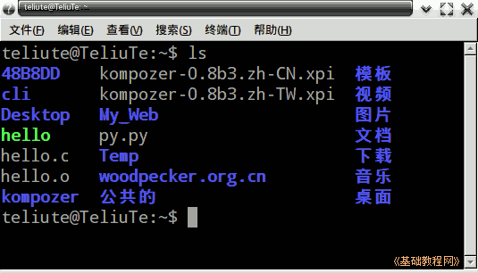
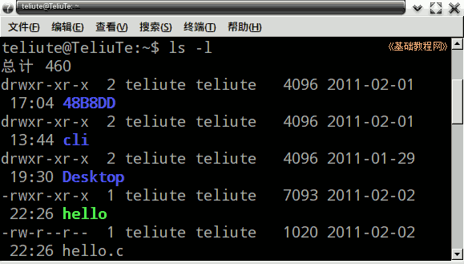
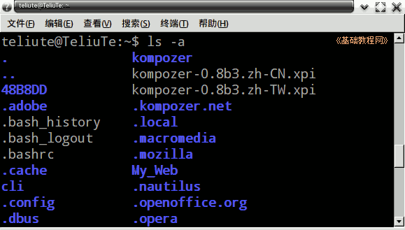
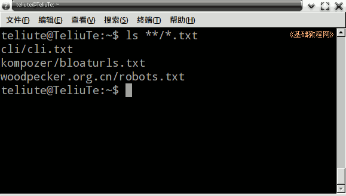

Ubuntu 命令行教程
作者：TeliuTe 来源：基础教程网
五、ls 列出文件 返回目录 下一课ls 命令可以查看当前文件夹中的文件，类似的也可以用 dir 命令；
1、ls 命令
1）打开终端窗口，显示当前为主文件夹；
2）输入命令 ls 然后按回车，这是查看主文件夹 里的内容；

不同颜色代表不同的类型，普通文件是灰色，文件夹是紫色，可执行文件是绿色；
3）再输入 ls -l 后面是空格、短线小写的 L，用来显示详细信息，包括日期、大小、权限、所有者等；

4）输入 ls -a 这会显示隐藏文件，即文件名是以 . 点开头的文件，这些文件或文件夹平时是不显示的；

5）查看当前文件夹和子文件夹中的，所有 txt 类型的文件，也就是文件扩展名是 .txt 的文件，输入命令 ls **/*.txt

6）其他用法，可以输入 ls --help 命令，查看更多详细的介绍；
本节学习了 ls 命令的基础知识，如果你成功地完成了练习，请继续学习下一课内容；
本教程由86团学校TeliuTe制作|著作权所有
基础教程网：http://teliute.org/
美丽的校园……
转载和引用本站内容，请保留版权信息和本站链接。